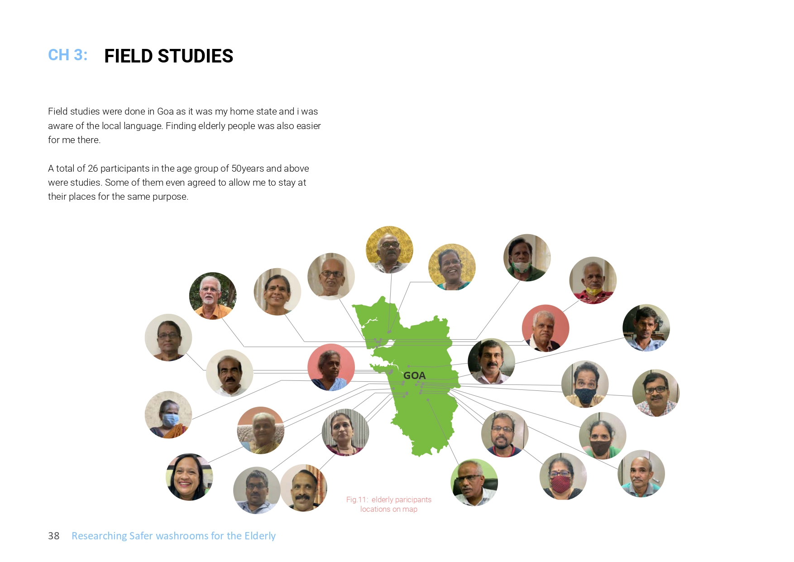
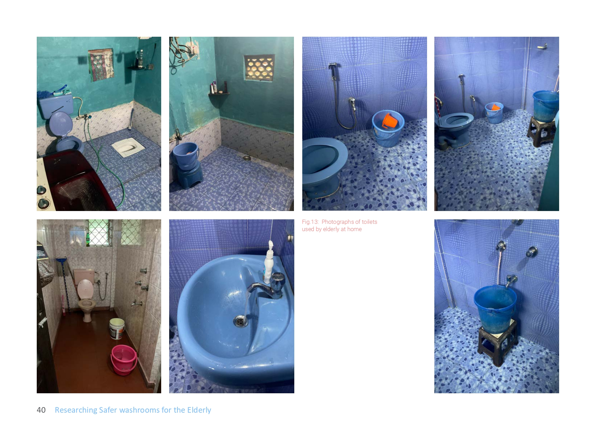
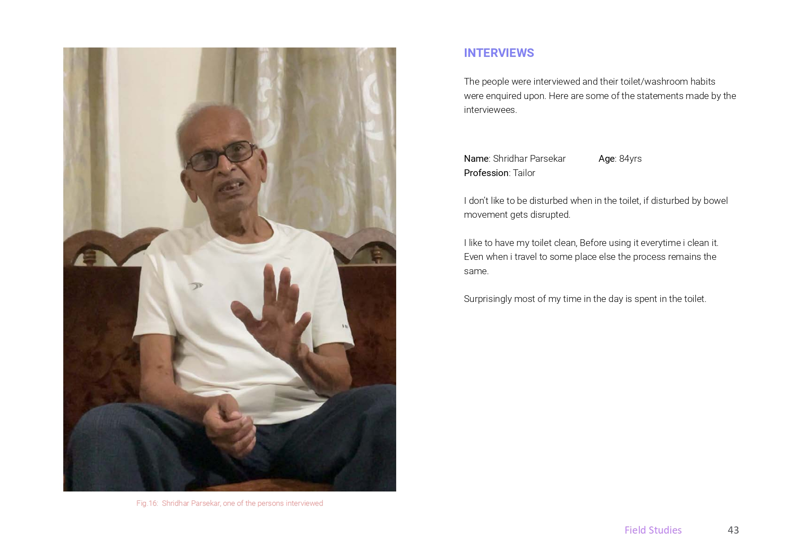
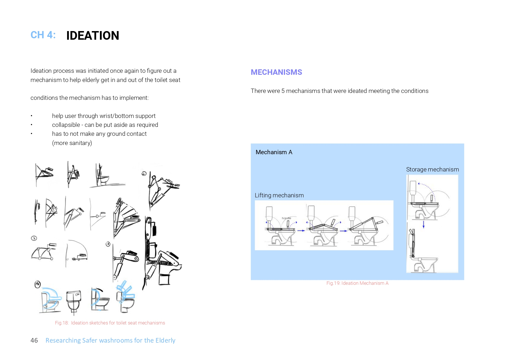
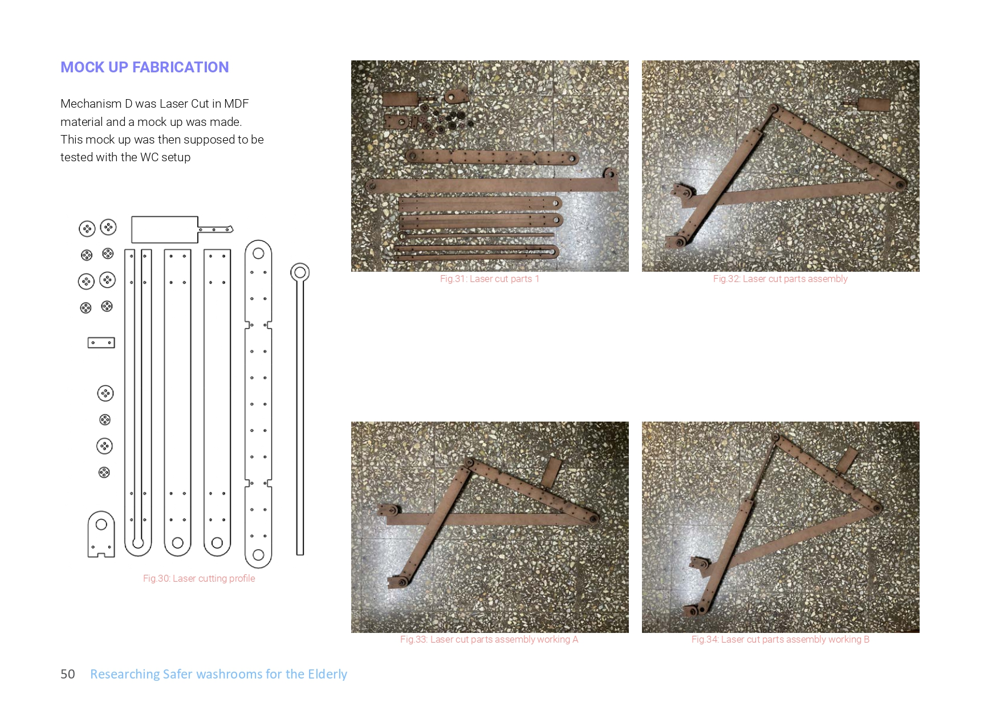
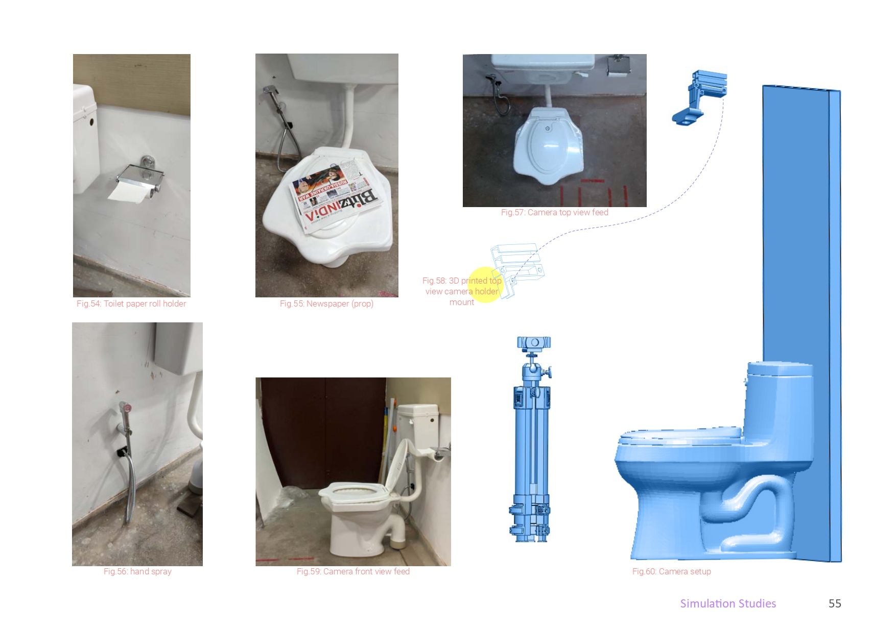
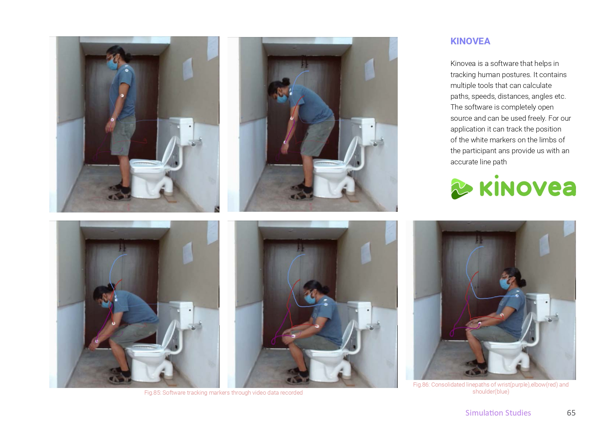
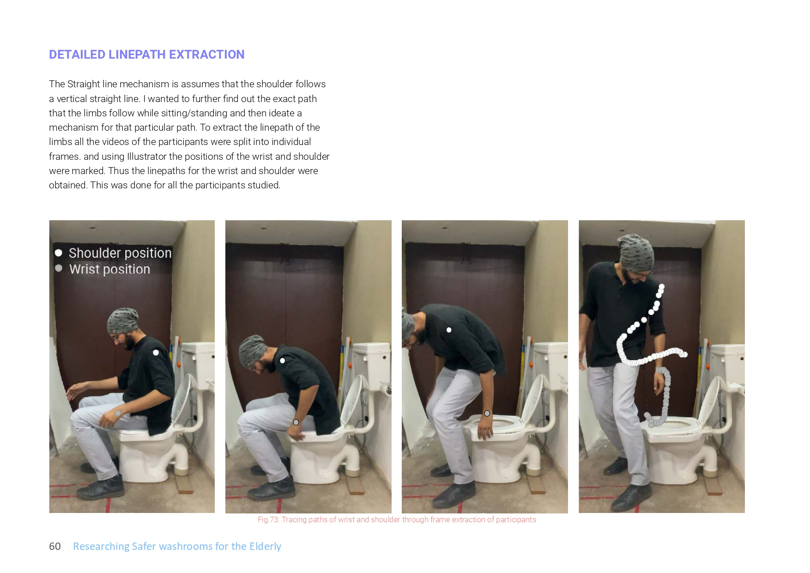
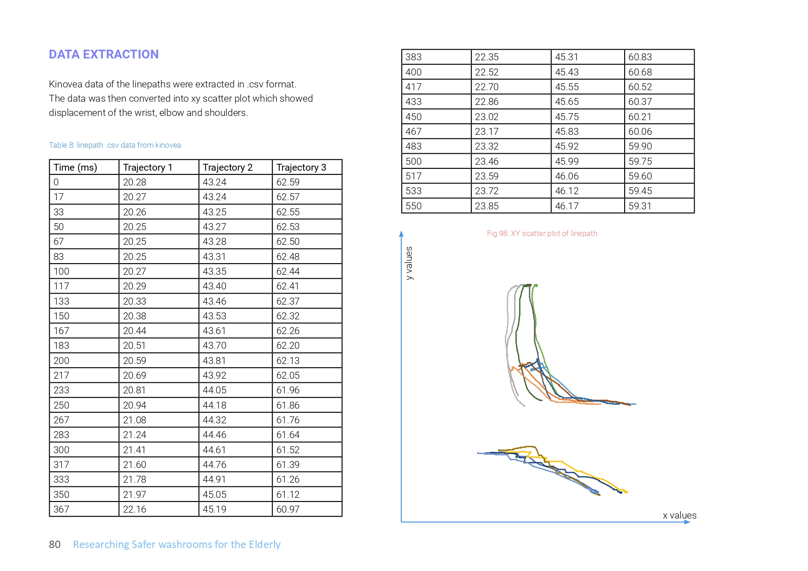

Researching Safer Washrooms
for the Elderly
A research design project exploring why washrooms are dangerous for elderly Indians — and designing, prototyping and simulating a mechanism to help them get in and out of the toilet seat safely.

Washrooms are one of the most dangerous places in the home for the elderly.
Elderly people face a convergence of risks in washrooms: reduced dexterity, vision loss, weakened strength, and the prevalence of wet, slippery surfaces. Falls in bathrooms are a leading cause of serious injury — and sometimes death — in older populations.
Despite this, grab bar standards in India are largely copied from international guidelines that don't account for Indian body dimensions or toilet usage habits. The brief was to investigate this problem, understand what the elderly actually need, and design a solution — or at least lay the evidence base for one.


26 elderly participants across Goa — in their own homes.
Field studies were conducted in Goa (my home state), where I had the advantage of language familiarity and access to elderly participants willing to be observed at home. A total of 26 participants aged 50 and above were studied — some even hosted me overnight.
- Interviews — understanding daily toilet habits, pain points, fears and workarounds
- Home observations — documenting the real conditions of washrooms elderly people live with, not sanitised lab setups
- Insight synthesis — surface safety, grab support, and toilet seat height were the dominant concerns
The photographs from participants' homes revealed a consistent pattern: make-do arrangements, stools used as transfer aids, and almost no safety infrastructure by design.
What the standards say — and why they fall short.
An extensive literature review covered: bathroom falls and accident data, Universal/Accessible Design principles, existing simulation studies, toilet grab bar arrangements globally, and Indian BIS/NBC standards.
The core finding from the review: Indian grab bar height standards appear to be directly copied from international sources, without local anthropometric validation. There is real confusion about what height the bars should be, and no consensus from evidence.
This directly seeded the subsequent IEA-published paper — "Are Guidelines and Standards for Design of Accessible Toilets in India Evidence-Based?" (IEA 2024).
5 mechanisms for getting on and off a toilet seat.
With insights from the field, I initiated an ideation process focused on a mechanism that could help elderly users sit down and stand up from a toilet seat. The mechanism had to meet three conditions:
- Help the user through wrist/bottom support
- Collapsible — can be put aside when not in use
- No ground contact — for hygiene in wet washrooms

Five mechanisms were developed. Mechanism D was selected for prototyping — a laser-cut MDF linkage system designed to assist the standing motion using a gas spring.
Laser-cut MDF mock-up, fabricated and assembled by hand.
Mechanism D was laser cut in MDF material. The parts were assembled and iterated — a physical prototype ready to be tested with the washroom (WC) setup. This hands-on fabrication phase included 3D printed components for hinges and mounts, and a gas spring for actuation.

A controlled lab environment, two cameras, computer vision.
The simulation study was designed to record and analyse the body movements of participants using the toilet setup. A gridded wall environment was constructed, two cameras placed (side view and top view), and participants recorded performing sit-to-stand transitions.

Two simulation rounds were run. The second used Kinovea, an open-source motion tracking tool, to track white markers placed on participants' wrists, elbows and shoulders during the sit-to-stand motion. PoseNet was also evaluated for pose estimation.

Frame-by-frame tracking to extract the exact paths limbs follow.
All video recordings were split into individual frames. Using Illustrator and Kinovea, the positions of the wrist and shoulder were marked at each frame — building up the linepath each joint follows during the sit-to-stand movement. This was done for all 12 participants in the pilot trials.

The resulting XY scatter plots showed the displacement trajectories of each joint — revealing a consistent pattern across participants that could be used to define a grab bar height zone that intercepts the wrist and elbow at the most critical moment of the motion.

What the data said about grab bar placement.
What I carried forward.
This project was far more than an academic exercise — it grounded me in the reality that design standards can cause harm through inaction. Grab bar placements that don't reflect how Indian bodies move in a washroom are not neutral; they actively fail the people who need them most.
The field work in Goa — staying with participants, seeing their actual bathrooms, hearing their workarounds — was formative. It confirmed that real design research starts outside the lab.
The raw data, linepaths and methodology from this thesis were handed over to my guides for further research. The question I raised — are India's accessible-toilet standards actually evidence-based? — became the direct basis of the co-authored paper published at the 22nd IEA Congress (IEA 2024).